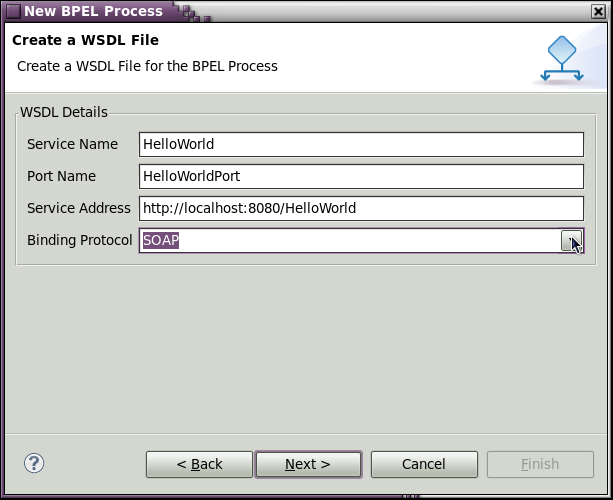

< Main Index Drools/Guvnor Tools >
General |
|
| BPEL Editor | The following issues were fixed. The list includes several XPath validation errors, user interface glitches, NPEs and some cosmetic issues. Many of these fixes have been contributed back to the eclipse BPEL project. |
| Deployment Editor | ODE Deployment editor had problems with defintions after refactoring operations. This is now fixed. See JBIDE-6230. |
Editor |
|
| New WSDL File Wizard | The BPEL "New File" Wizard has been enhanced to allow specification of a SOAP or HTTP service endpoint, which generates the <service> and <binding> elements in the WSDL artifact. Compared to earlier where all this had to be done manually via the editors this saves alot of time. See JBIDE-6154 for details.  |